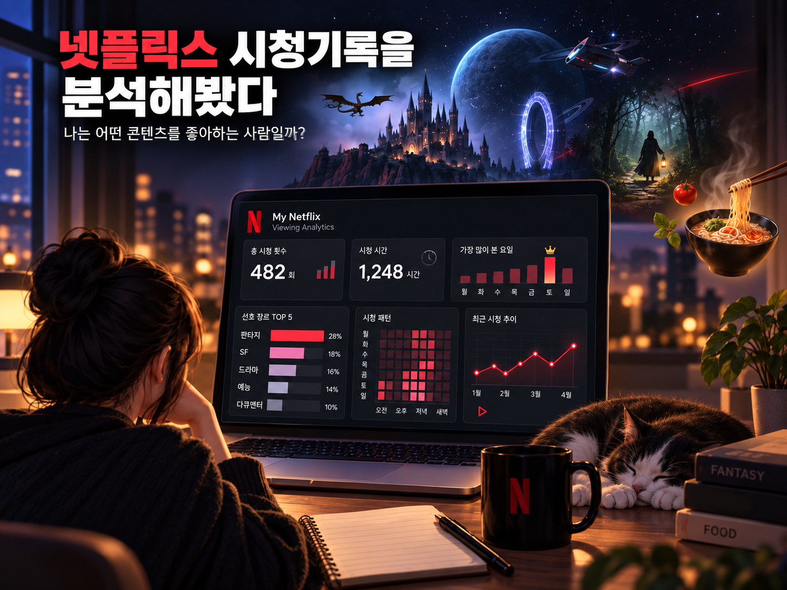

REFERENCE
ALLDAY PROJECT “TALK” M/V 리뷰
올데이 프로젝트의〈TALK〉뮤직비디오를 처음 봤을 때 가장 먼저 눈에 들어오는 건 음악보다도 화면의 질감이었다.
A PERSONAL JOURNAL
일상을 보며 좋은 것을 발견하고,
생각나는 것을 기록하고,
오래 기억하고 싶은 순간을 남깁니다.

THE LATEST NOTES
지금을 기록합니다.
REFERENCE
올데이 프로젝트의〈TALK〉뮤직비디오를 처음 봤을 때 가장 먼저 눈에 들어오는 건 음악보다도 화면의 질감이었다.
DAILY
미래에서 찾아온 늙은 루데우스가 남긴 일기를 통해, 미래가 하나씩 드러난다.

DAILY
2019년 2월 3일부터 2026년 9월 13일까지 넷플릭스 총 시청 기록은 무려 4,236건
DAILY
괴물과 마법, 전쟁과 음모가 뒤섞인 다크 판타지《위쳐》시즌4!